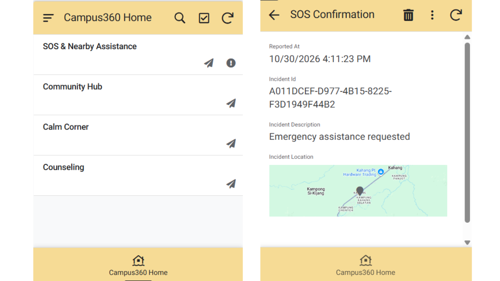

Campus360
A Campus Safety and Mental Wellness Application
Campus360 is a mobile application prototype designed to support campus safety, mental wellness and community engagement. Developed using Google AppSheet, the application brings together emergency assistance, emotional support, relaxation activities and counselling resources in one platform.

Project Overview
Campus360 is designed to provide students with a centralised platform for accessing campus safety assistance and mental wellness support. The application combines practical support features with community interaction and self-care resources to create a more supportive campus environment.
Project Objectives
- Provide accessible emergency assistance for students on campus.
- Encourage emotional expression and self-reflection.
- Promote mental wellness through relaxation and self-care activities.
- Connect students with useful mental health information and counselling resources.
- Build a more supportive and connected campus community.
Key Features
SOS & Nearby Assistance
Provides an emergency assistance feature designed to help students request support when they need it.
Community Hub
Includes interactive community features such as Kindness Bottle and Emotion Space to encourage emotional expression and positive interaction.
Calm Corner
Offers relaxation resources and simple activities to help students manage stress and take care of their well-being.
Counseling
Provides access to counselling-related information and mental health resources.
My Contributions
I independently led the design and development of the Campus360 application prototype using Google AppSheet. I was responsible for building the application structure, designing its interfaces and configuring its features. My contributions included:
- Designing and developing the overall application prototype using Google AppSheet.
- Conceptualising and developing the Emotion Space features, including Emotion Check-In, Let It Out and My Emotion Journal.
- Introducing Mind and Body in Calm Corner, providing users with simple physical activities to help relieve stress.
- Proposing the Mental Health Resource Library feature under Counseling.
- Configuring application views, navigation and data connections using Google Sheets.
Design & Development
The application was developed using a no-code approach with Google AppSheet. Its interface was organised into different sections to make navigation simple and accessible. Google Sheets was used as the data source to manage the application's information.